Dictionary Fills
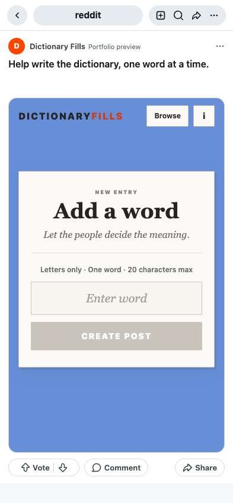
Local Dictionary Fills word-builder and information panel with neutral local post metadata. No word post submitted.
Fillables
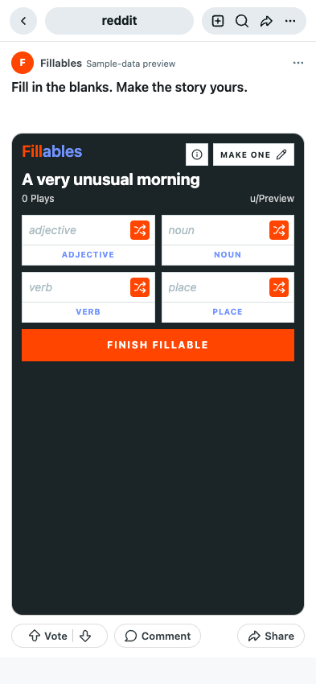
Fresh Fillables frontend. Explicit sample story, neutral user metadata and local completion response generated from the selected words. No Reddit comment submitted.
Karma Crunch
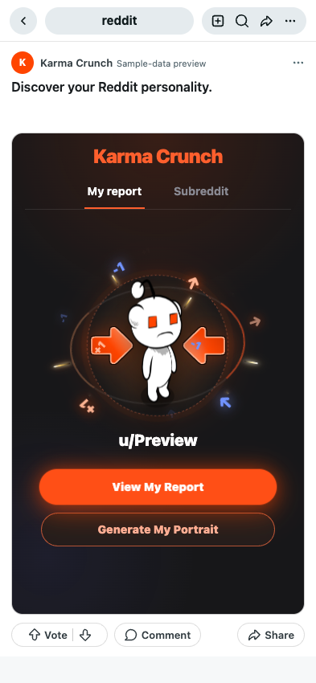
Local Karma Crunch launcher with a sample Preview identity; report-type controls only. No personal report or portrait generated.
Letterset
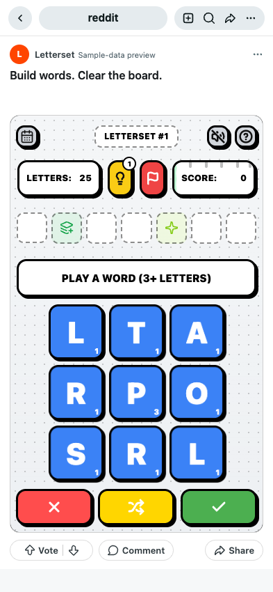
Fresh local frontend with daily-puzzles.sample.json puzzle 1 and the repository’s letter/bonus definitions. Neutral user metadata; no community scores submitted.
PocketGrids
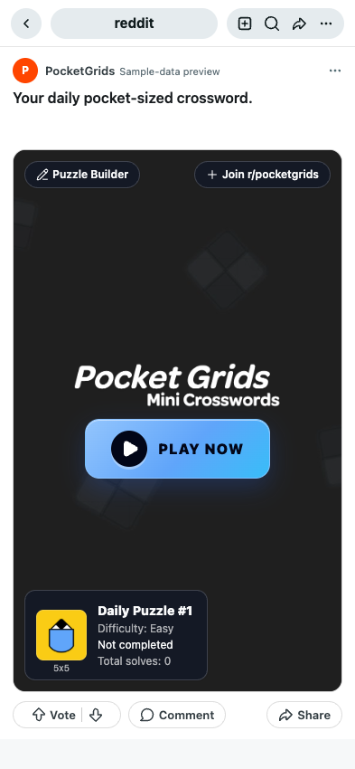
Local PocketGrids inline and game entrypoints with the first saved 5x5 crossword from pgtools/backup_puzzle_data/puzzles_5X5_with_clues.json. Neutral progress metadata; inline-to-game navigation emulated locally.
Syllo
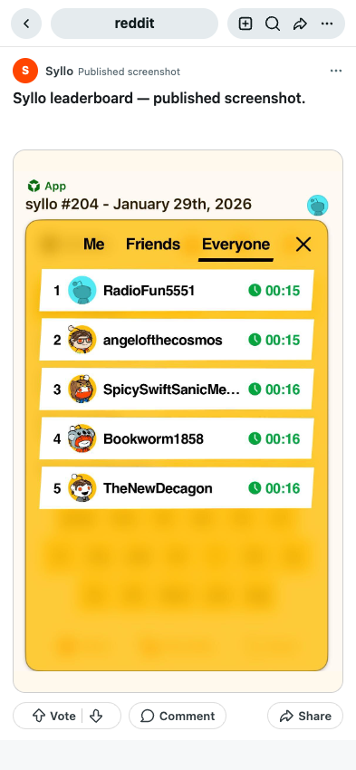
Published stills, not a fresh mobile gameplay capture. Portrait leaderboard from Reddit developer documentation; gameplay screenshot from MobyGames. Original aspect ratios preserved inside the composed mobile frame. Live post blocked in capture browser; no gameplay GIF available.
ABC Scrubs
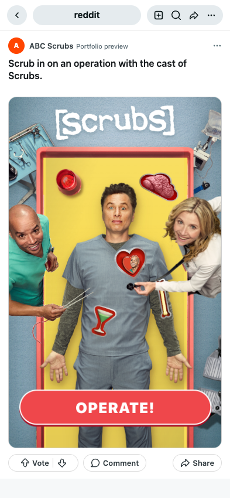
Local Scrubs prototype; uses its existing mock API.
Adobe Firefly
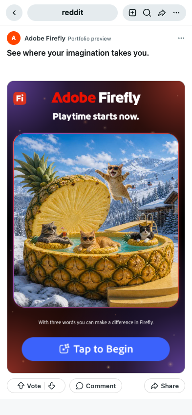
Fresh frontend build from 152-reddit-adobe source. Actual local selection flow and bundled result images; no AI image generation was performed for this capture.
Apple
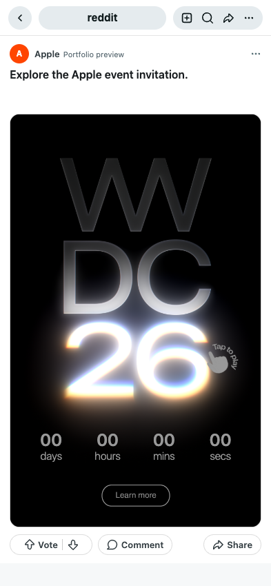
Frontend built from hftf-apple with existing compatible dependencies. Original bundled event creative and sticker animations; event countdown reflects the historical creative. No outbound CTA opened.
Arby's
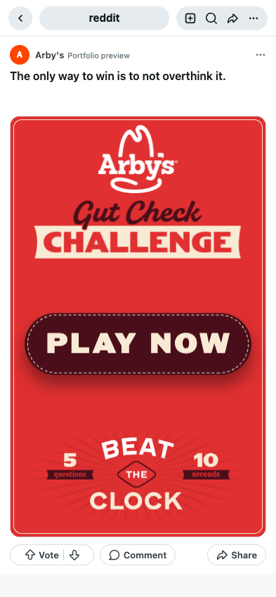
Local frontend quiz.
E*TRADE
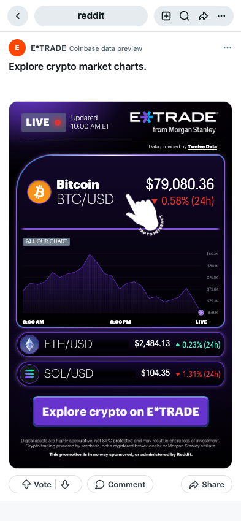
Local E*TRADE frontend with real public Coinbase Exchange BTC-USD, ETH-USD and SOL-USD stats and hourly candles retrieved September 7, 2026. Alternate data provider for this preview, not the linked post’s backend.
FanDuel Dynamic Parlay
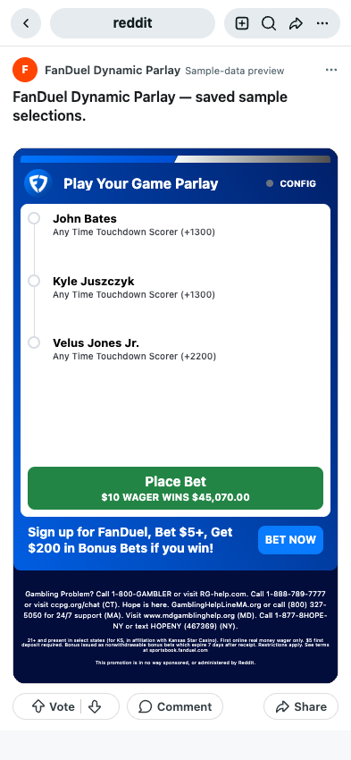
Local frontend with three sample selections from fixtures/player-props.json. Sample odds and default offer copy; not a live parlay. Static capture only; buttons lead to external betting actions.
FanDuel Predicts
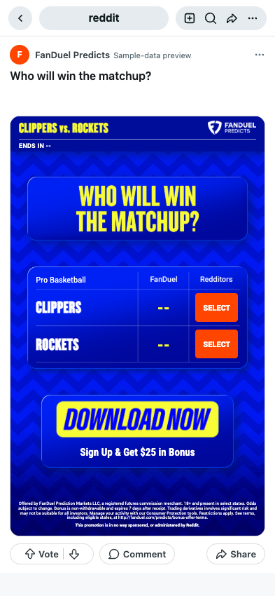
Local 141-reddit-fanduel2 build with a sample Clippers/Rockets matchup and empty voting data. Odds are unavailable, not invented. Default offer copy belongs to this local build; not a live promotion.
Google Shopping
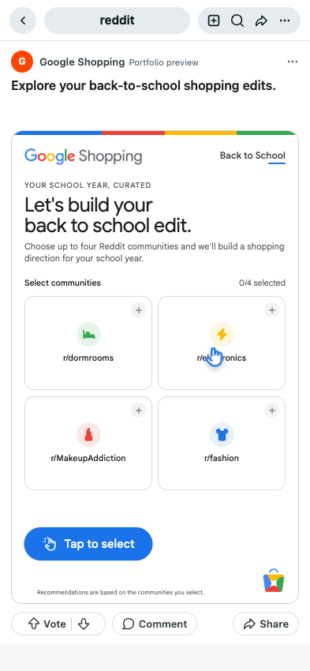
Local Google Shopping build; community choices and product results. No purchases or external product links opened.
Levi's
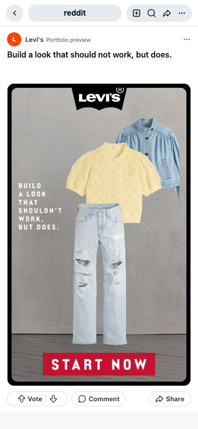
Local frontend; community metrics unavailable.
McDonald's
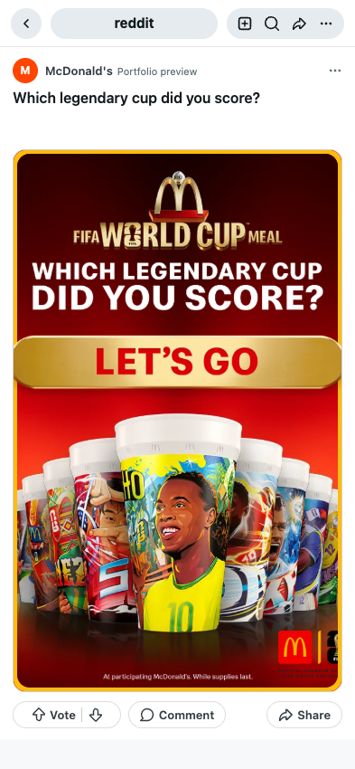
Local frontend built from source into a temporary directory.
NBA
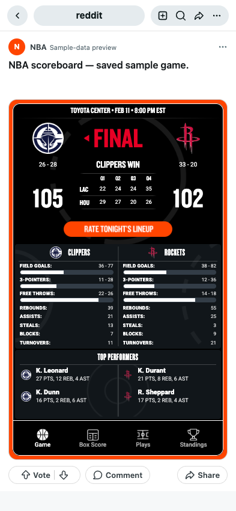
Local frontend with the repository’s saved summary-closed.json: Clippers vs Rockets, February 11, 2026. Does not depict the linked Knicks post.
Paramount
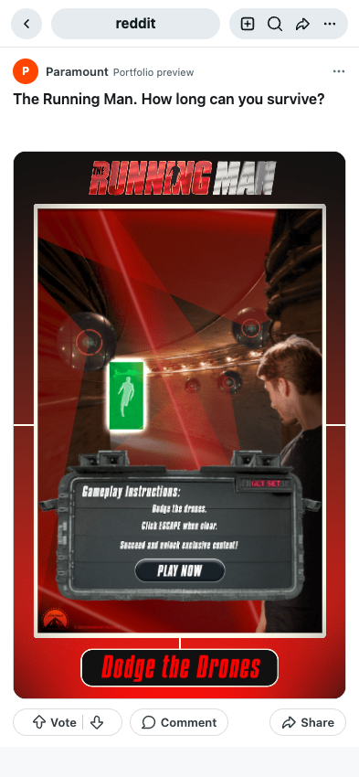
Local Running Man frontend and gameplay.
PrizePicks
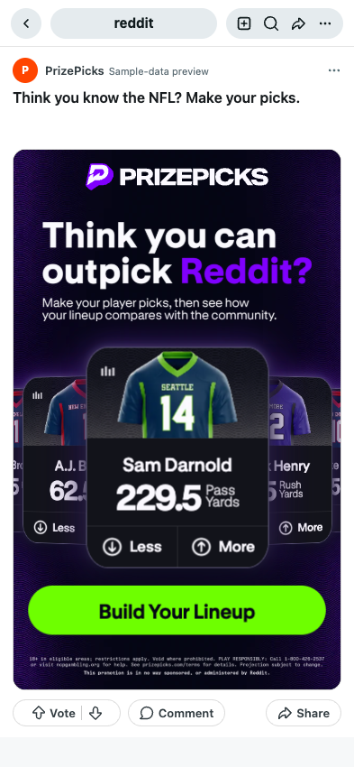
Local PrizePicks build using saved app-projections.json reference data. Category names normalized to the app schema. Player images loaded from static.prizepicks.com. Sample selection window; no live votes or bets.
Royal Canin
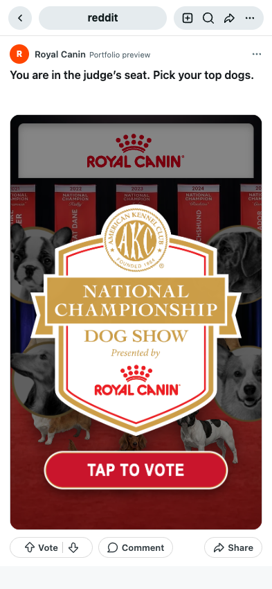
Local Royal Canin build; dog selection and details. No live votes submitted.
Sephora
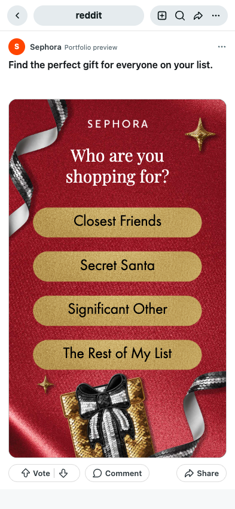
Local frontend gift quiz and product result.
Vital Farms
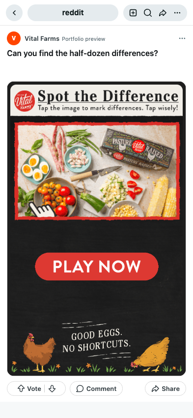
Local frontend with empty initialization metadata; completion count 0, empty histogram, admin disabled.